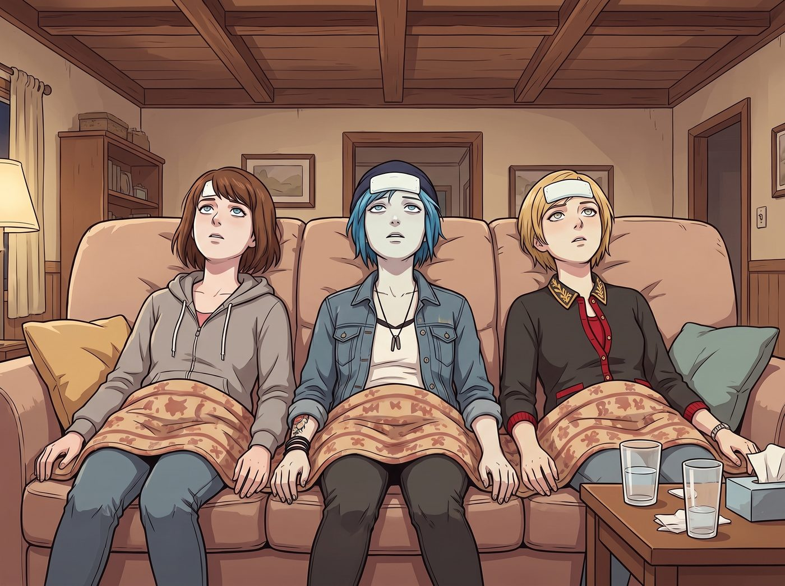

無期徒刑

當週日下午，二號車廂的門被輕輕推開時，裡面沒有發生任何預想中的「監獄暴動」。
事實上，西雅圖的「慈善法律援助交流會」結束後，Kate 和 Lily 踏入車廂時，看到的是一幅極度淒涼、宛如戰地醫院般的景象。
三位曾經叱吒風雲的阿卡迪亞灣惡霸、時空領主與財團名媛，此刻正整整齊齊、面色蒼白地並排躺在起居廂那張巨大的沙發上。她們的額頭上貼著退熱貼，每人肚子上蓋著一條小毛毯，眼神空洞地看著天花板，宛如三條被抽乾了靈魂的鹹魚。
一、聖母的無痛安撫
「天啊，這是怎麼了？」Kate 發出一聲驚呼，立刻放下手裡的行李袋，快步走到沙發前。小天使的眼神裡充滿了純粹的心疼，完全沒有任何指責的意味。
「Kate……」Chloe 虛弱地伸出一隻手，像是在沙漠裡渴了三天的旅人看到了綠洲，「妳終於回來了……我發誓，我這輩子再也不吃那家卡車餐廳的雙層牛肉堡了……」
「我們被反式脂肪物理制裁了……」Max 氣若游絲地補充。
「我的胃黏膜……正在罷工……」Victoria 閉著眼睛，發出屈辱的呻吟。
面對這三個因為越獄而把自己搞得半死不活的大孩子，Kate 沒有生氣，也沒有說「我早就告訴過妳們」。她只是溫柔地跪在沙發旁，用微涼的手背依次貼了貼她們的額頭，然後露出了一個讓三人瞬間想流淚的、充滿母性光輝的微笑。
「真是辛苦妳們了呢。」Kate 輕聲細語，彷彿她們不是去偷吃垃圾食物，而是剛剛拯救了世界回來，「沒關係的，都過去了。我這就去廚房給妳們煮點熱騰騰的、好消化的蘋果肉桂燕麥粥。」
二、實習生的探監伴手禮
Lily 穿著整潔的制服裙，推了推圓框眼鏡，手裡提著三個精美的紙袋，乖巧地走到沙發前。
「學姐們，下午好。看到妳們的腸道菌群正在努力進行災後重建，我感到非常欣慰。」Lily 的聲音依然甜美軟糯。
沙發上的三個人集體打了個寒顫，下意識地把肚子上的小毛毯拉高了一點。
「Lily……那張粉色的便條紙……」Max 嚥了一口口水，「妳是不是連我們去哪家餐廳都算到了？」
「這是基礎的行為邏輯推演，Max 學姐。」Lily 微微歪頭，露出一個純潔的微笑，「因為方圓三十公里內，只有那一家卡車餐廳的收銀系統沒有與聯邦稅務局聯網，也只有他們會接受 Price 學姐那種皺巴巴的、來源不明的現金。」
Lily 從紙袋裡拿出三個看起來非常高級的、帶有液晶螢幕的運動手環。
「為了慶祝我們重新團聚，也為了防止未來的『報復性飲食危機』，這是我在交流會期間，利用空檔為大家準備的伴手禮哦。」Lily 溫柔地將手環依次戴在三人無力反抗的手腕上。
「這又是什麼……電子腳鐐嗎？」Chloe 絕望地看著手腕上亮起的綠燈。
「這是『醫療級無創連續血糖與血脂監測手環』，Price 學姐。」Lily 幫她扣好錶帶，語氣裡充滿了學術的嚴謹，「它與我手機裡的健康合規系統是即時聯網的。一旦監測到您體內的飽和脂肪酸濃度在短時間內異常飆升……」
「會怎樣？」Victoria 驚恐地問。
「手環會發出高頻的警報聲，並且自動向最近的急救中心發送『疑似心肌梗塞』的求救信號，同時抄送一份醫療帳單到 Chase 財團的財務部。」Lily 雙手交握，眼神中閃爍著大愛無疆的光芒，「這樣，我們就能在第一時間保護妳們的生命安全了。這叫『物理前置預防機制』。」
三、徹底的溫柔馴化
起居廂裡死寂了三秒。如果放在以前，這三個傢伙絕對會跳起來把手環砸得粉碎。但現在，經歷了昨晚那場生化危機級別的胃痛，再聞著廚房裡飄來的、Kate 正在熬煮的肉桂燕麥粥的甜香，她們的靈魂已經徹底被馴化了。
「Max，」Chloe 癱在沙發上，看著手腕上閃爍的綠燈，語氣安詳得像個看透紅塵的老僧，「其實仔細想想，戴個手環也挺酷的。」
「是啊，」Max 閉上眼睛附和，「只要每天能吃到 Kate 做的飯，就算被監控，也是一種幸福。」
Victoria 甚至優雅地調整了一下手環的位置：「Lily，這手環有別的顏色錶帶可以替換嗎？我不能讓它破壞我秋季的穿搭色系。」
「有的，Victoria 學姐。」Lily 乖巧地點頭。
「孩子們，粥煮好了哦！」Kate 端著一個巨大的托盤走出來，上面放著三碗熱氣騰騰、散發著溫暖香氣的燕麥粥。三頭曾經的猛獸立刻從沙發上爬起來，乖巧得像幼兒園裡等待發糖果的小朋友。
沒有暴動，沒有反抗。在這場名為二號車廂的無期徒刑裡，典獄長用最致命的溫柔和最無懈可擊的科技，徹底粉碎了囚犯們最後一絲越獄的念頭。
「這碗粥真好吃……」Chloe 一邊吃一邊流下了幸福的眼淚。
而 Lily 則坐在旁邊，推了推圓框眼鏡，悄悄在筆記本上將這三個傢伙的服從性評分調到了滿分。